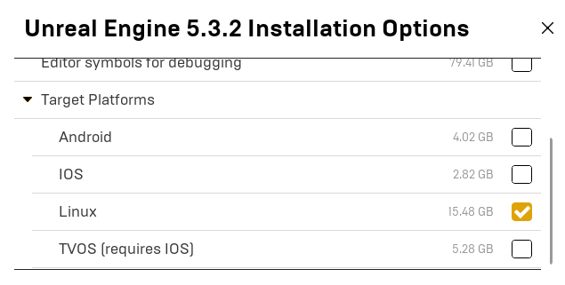
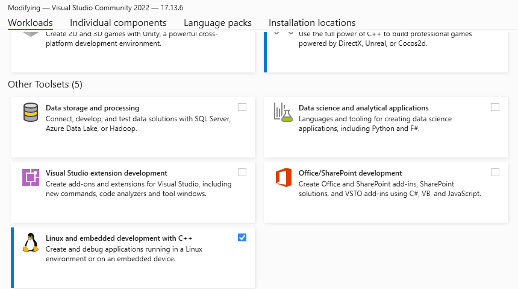

Packaging Environments
An Unreal project needs to be packaged before it can be distributed. This process produces the engine executables and bundles up all of the assets that are needed for the client to start up the engine by itself without starting it from the editor or Visual Studio.
This process will compile the C++ code for HoloOcean and “cook” the .uasset files (including
blueprints!) into one large .pak file, and create the directory structure needed.
Adding HoloOcean Worlds
The finished package will only contain the worlds (called “levels” in the editor) that are added into
the project. The holoocean repo only contains the example level. You can create new worlds by
simply making a new level in the Unreal Engine editor. Please reference Creating a Custom Level for more
details on creating levels.
Note
Because the other packaged worlds distributed with HoloOcean contain purchased assets, they are only available to official BYU FRoStLab members. Other users will have to develop their own worlds in the HoloOcean repo.
Cooking Content
You may need to cook the content to “refresh” the assets, levels, and blueprints that
holoocean/engine reads.
From Unreal Editor:
Platforms ➡ Windows/Linux ➡ Cook Content
Packaging HoloOcean
Operating System
It is best to package HoloOcean using the same operating system it will be run on. If you want to run your project for Windows, you should be using Unreal Engine in Windows to compile the project, and vice versa for Linux.
If you are using Windows, it is possible to package an executable for Linux. If you wish to cross compile from Windows to Linux, you must implement the following changes. Otherwise, you can continue to Packaging.
Go to your Unreal Engine version within the Epic Games Launcher. Right click on the arrow next to the “Launch” button and select Options.

Under “Target Platforms”, select Linux and install.
Download the Cross-Compile Toolchain v22 (refer to Unreal Engine’s Cross-Compile documentation).

Modify your Visual Studio 2022 install to include the “Linux and embedded development with C++”

With these changes, you should be able to compile for Linux from Windows.
Packaging
From within the Unreal Editor, select Platforms ➡ Windows/Linux ➡ Package Project

Select the Package Location
In order to be able to call
holoocean.make(), you will need to place the packaged engine in Package Installation Location. Make sure the version in the path matches the output of theholoocean.util.get_holoocean_versioncommand.After selecting the package location, the exported package should have this structure:
+ worlds |--+ PackageName |-- config.json |-- WorldName-ScenarioName.json |--+ Linux (or Windows) | UE5 build output
Edit Configuration Files
The
config.jsonfile is generated by the packaging process, but may need to be modified. Ensure the following two fields match the operating system you are using:"platform": "linux" "path": "Linux/Holodeck/Binaries/Linux/Holodeck"
OR
"platform": "windows" "path": "Windows/Holodeck/Binaries/Win64/Holodeck.exe"
Configuration files for each scenario must be made by the user. They are placed in the
worlds/PackageNamedirectory. See Making Custom Scenarios for details on how to create configuration files for your scenarios.
The packaged project should now be ready to run. You can access your packaged environments and
associated scenarios using the holoocean.make() command.